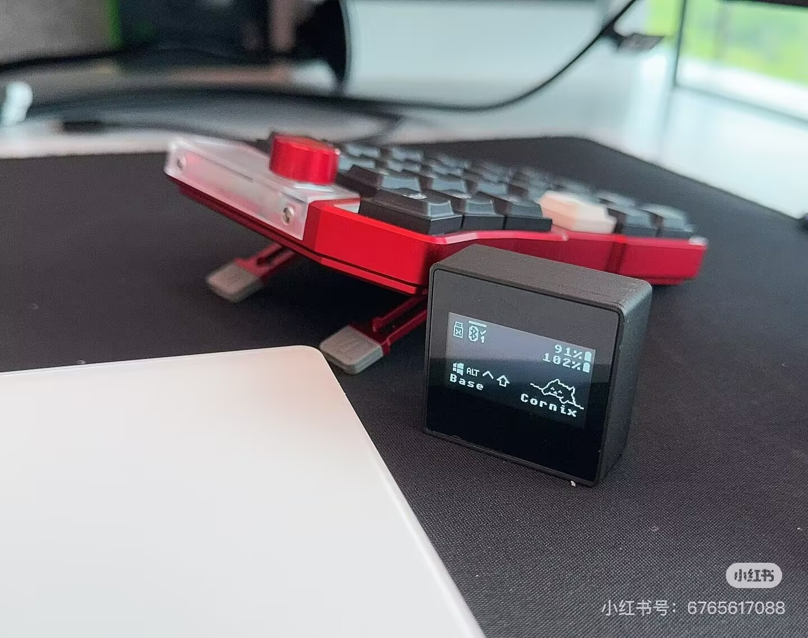
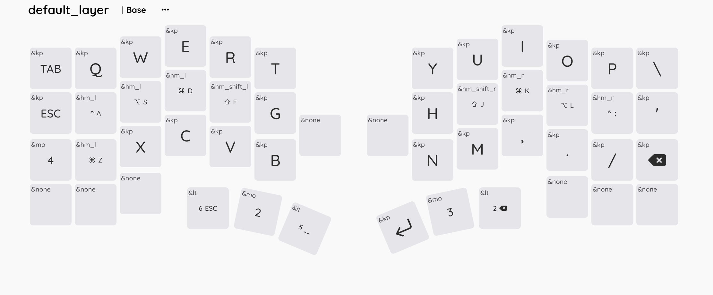

cornix_left//zmk
左半扫描自身矩阵、连接主机，并接收右半发送的分体输入事件。
矮轴 · 分体 · 开源固件
从首次刷写，到能够持久保存设置的 USB dongle，一份面向
Zephyr 4.1 与 ZMK main 的清晰实践指南。

01 · 项目介绍
Cornix 既可作为传统的左右两片 ZMK 分体键盘，也可让独立 USB dongle 担任 central。board 名称决定角色，shield 则叠加 dongle、 屏幕或 RGB 功能。
请使用下列 board//zmk 名称。未限定的 nice!nano 可能选中错误的 settings backend，导致重启后丢失蓝牙身份。
cornix_left//zmk左半扫描自身矩阵、连接主机，并接收右半发送的分体输入事件。
cornix_right//zmk右半把矩阵及编码器事件发送给当前 central。
cornix_ph_left//zmk由独立 USB dongle 担任 central 时，左半须改用此角色。

可选指示灯
cornix_indicator shield 驱动每侧两颗 RGB LED，显示
电量与分体连接状态。3.0.0 默认亮度为 64，最后一个临时指示结束
一秒后关闭 WS2812 电源轨。若主动保持 LED 常亮，仍会增加耗电。
02 · 安装指南
使用稳定版固件可直接获得默认配置；需要改键则 Fork 后交给 Actions 构建；已有 zmk-config 的用户可把 Cornix 作为 west 模块集成。
下载 v3.0.0 ZIP，为每个角色选择对应 UF2，再按下文顺序清理设置并刷写。
Fork 仓库，编辑 config/cornix.keymap 后推送，再从最新 Actions 运行中下载 firmware artifact。
把模块合并进 west manifest，固定稳定 tag，更新依赖，并在 build.yaml 使用带限定符的 target。
其中包含标准分体、dongle 与 reset 角色所需的六个 UF2，但未启用 cornix_indicator。如需 RGB，请自行构建。
config/west.yml每个 remote 与 project 只保留一份。固定 v3.0.0 可获得可复现的稳定配置；只有明确追踪开发版时才改用 main。
manifest:
remotes:
- name: zmkfirmware
url-base: https://github.com/zmkfirmware
- name: cornix-shield
url-base: https://github.com/hitsmaxft
projects:
- name: zmk
remote: zmkfirmware
revision: main
import: app/west.yml
- name: zmk-keyboard-cornix
remote: cornix-shield
revision: v3.0.0
self:
path: configwest updateinclude:
- board: cornix_left//zmk
artifact-name: cornix_left
- board: cornix_right//zmk
artifact-name: cornix_right
- board: cornix_right//zmk
shield: settings_reset
snippet: nrf52840-nosd
artifact-name: cornix_reset如需 RGB，请在 manifest 加入 zmk-rgbled-widget，并在需要驱动 LED 的半侧设置 shield: cornix_indicator。此功能须主动启用，不在默认发布包内。
cornix_reset.uf2。Cornix v2.3 及之后的版本默认采用 no-SoftDevice 布局。若设备不再进入 预期固件，或正在 stock RMK 与 ZMK 布局之间切换，请停止反复刷入无关 UF2，先按仓库的 bootloader 恢复说明确认布局与恢复路径。
03 · Dongle 集成
在 dongle 模式下，USB 接收器负责主机 endpoint。键盘左右两片都成为
split peripheral，因此左半固件必须由 cornix_left//zmk
改为 cornix_ph_left//zmk。
nice_nano//zmkcornix_dongle_adapter
cornix_ph_left//zmk
cornix_right//zmk
cornix_dongle_adapter为 Cornix dongle 构建提供预期的矩阵及 split 角色。正确拼写是 adapter，请勿再使用旧文档中的 adaptor 拼写。
cornix_dongle_eyelash + dongle_display仅当 dongle board 尚未提供 zephyr,display 时添加 eyelash shield；dongle_display 提供显示 widget。独立的旧 dongle_screen 路径并非此处支持的 Zephyr 4.1 方案。
include:
- board: nice_nano//zmk
shield: cornix_dongle_adapter cornix_dongle_eyelash dongle_display
snippet: studio-rpc-usb-uart nrf52840-nosd
artifact-name: cornix_dongle_nosd
- board: cornix_ph_left//zmk
artifact-name: cornix_left_for_dongle_nosd
- board: cornix_right//zmk
artifact-name: cornix_right_nosd
- board: nice_nano//zmk
shield: settings_reset
snippet: studio-rpc-usb-uart nrf52840-nosd
artifact-name: reset_nicenano_nosd使用 dongle_display 时，还须在 west manifest 加入当前 zmk-dongle-display 模块。若硬件已经定义 zephyr,display，则省略 cornix_dongle_eyelash，改用与实际屏幕硬件匹配的 shield。
请检查 dongle 最终生成的 .config。带限定符的 nice!nano 必须通过 NVS 保存蓝牙身份与 split bond：
CONFIG_BOARD_TARGET="nice_nano@2.0.0/nrf52840/zmk"
CONFIG_NVS=y
CONFIG_SETTINGS_NVS=y
# CONFIG_SETTINGS_NONE=y must be absent若日志出现 No ID address、settings 保存错误、SMP 失败，或每次重启都产生新蓝牙身份，请先确认 board 限定符与 settings backend，再分析 RF。
若启用 DYA Settings RPC 或 Battery History 的跨分体传播，dongle 与左右 peripheral 必须公开相同的 split relay contract。缺失 relay characteristic 是这些 RPC 传播功能的兼容风险，但不能据此断言普通分体按键输入必然失效。 应把启动日志、characteristic 订阅、position notification 与 RPC 行为分别验收。
04 · 相关资源
本站用于快速完成具体任务；仓库 README、tag 源码及 issue 历史仍是详细记录与事实来源。